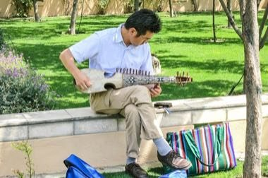
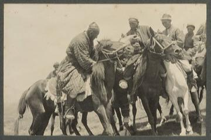
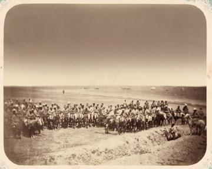

Home / Crossroads and Golden Ages / Persia, Caucasus and Central Asia
Encyclopedia ID 1224
Afghan Rubab Strings
Also known as رباب


Pluck the main and sympathetic strings in melodic patterns to match raags and keep a drone, using a clean fretless-slide gesture.
Heritage note
Part of the living heritage of Afghanistan.
Origins
Usually placed in the era of Crossroads and Golden Ages (about 500 to 1500), although its exact origins are uncertain, within the cultural world of Persia, Caucasus and Central Asia.
Sources
Related entries


Dombra
Kazakhstan · Musical instruments
Komuz
Kyrgyzstan · Musical instruments
Tar and mugham modes
Azerbaijan · Musical instruments
Chonguri
Georgia · Musical instruments
More from Afghanistan



